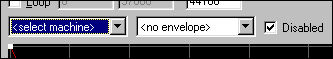
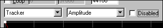
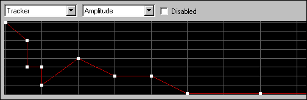

Envelopes are located in the bottom right of the Wavetable Editor . To enable them you must add a machine that uses them to the current song. The Jeskola Tracker is a good example of a machine which uses envelopes. Once you have a valid machine in your song, follow these steps to add an envelope:
-
Select the Sample
you wish to add an envelope to from the
Song
Wavetable
(Upper Left).

-
Select the machine and envelope
you wish to apply from the bottom right
envelope
section of the screen.

-
Be sure to
enable the envelope
by
un-checking
the disabled
box.

-
Click anywhere in the black envelope window
to add handles. You may then edit these handles by clicking and dragging
into any form you wish. You may also use the
ADSR
tool
to help shape complex envelopes.

-
Select a Sustain point by right-clicking on a point's handle and enabling
the Sustain option. A check will appear next to the word sustain along
with a vertical hashed line indicating that this point is the single
sustain point for this envelope.

-
In this example an
amplitude
envelope has been placed on a
Jeskola Tracker
. This envelope will now
be applied every time this sample is played. You are free to
edit this envelope at any time.
Note : Remember that each envelope is related to a sample and one individual machine. This means that you may have many envelopes for each sample, all tied to separate machines.